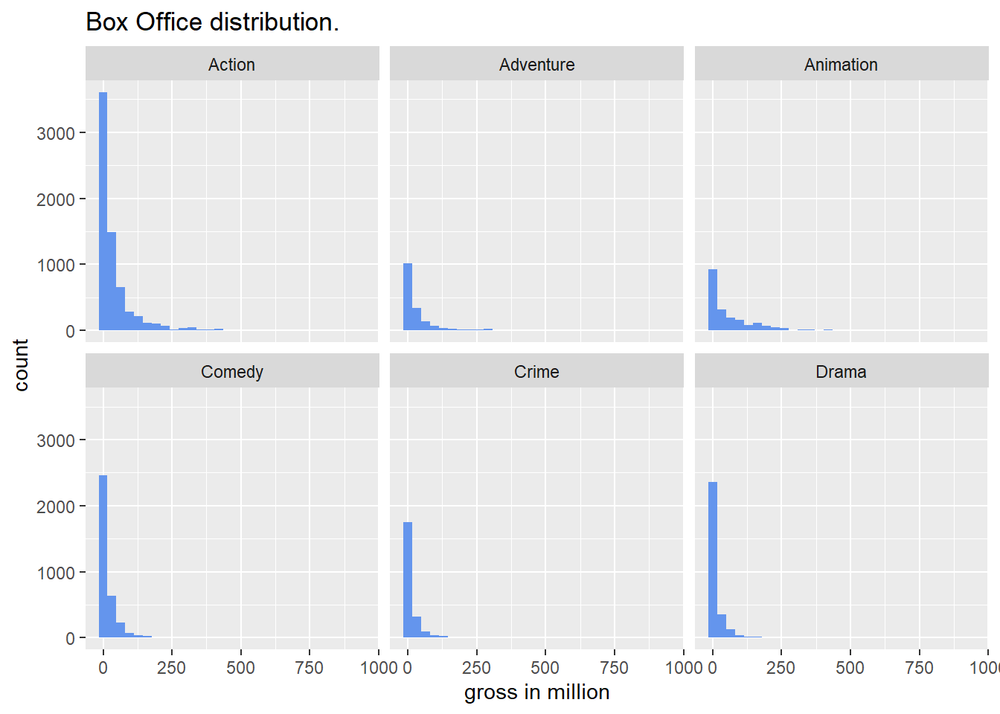
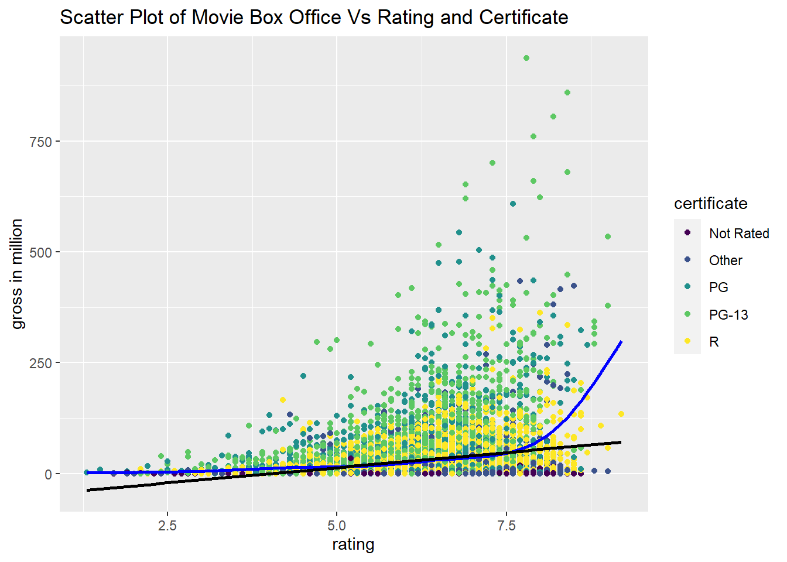

Chapter 2 Data pre-processing
2.1 Data Dictionary
movie_id – IMDB Movie ID
movie_name – Name of the movie
year - Release year
certificate – Certificate of the movie
run_time – Total movie run time
genre – Genre of the movie
rating – Rating of the movie
description – Description of the movie
director – Director of the movie
director_id – IMDB id of the director
star – Star of the movie
star_id – IMDB id of the star
votes – Number of votes in IMDB website
gross – Gross Box Office of the movie in million
2.2 Data Summary
2.2.1 Data Statistics
## 'data.frame': 318269 obs. of 8 variables:
## $ year : chr "2022" "2022" "2023" "2022" ...
## $ certificate: chr "PG-13" "PG-13" "R" "R" ...
## $ runtime : chr "161 min" "192 min" "107 min" "139 min" ...
## $ genre : chr "Action, Adventure, Drama" "Action, Adventure, Fantasy" "Action, Thriller" "Action, Adventure, Comedy" ...
## $ rating : chr "6,9" "7,8" "6,5" "8" ...
## $ director : chr "Ryan Coogler" "James Cameron" "Jean-Fran?ois Richet" "Dan Kwan, \nDaniel Scheinert" ...
## $ star : chr "Letitia Wright, \nLupita Nyong'o, \nDanai Gurira, \nWinston Duke" "Sam Worthington, \nZoe Saldana, \nSigourney Weaver, \nStephen Lang" "Gerard Butler, \nMike Colter, \nTony Goldwyn, \nYoson An" "Michelle Yeoh, \nStephanie Hsu, \nJamie Lee Curtis, \nKe Huy Quan" ...
## $ gross : int NA NA NA NA NA NA NA NA NA NA ...From the data summary table, note that some variables’ data type does not seem to be reasonable, such as rating should be integer type and certificate should be categorical type. I will fix this by assigning appropriate data type manually. Another noteworthy point is that there are many NA values in gross variable, which is our response variable. This inspires me to visualize the missing rate for each column in the dataset and see if other columns also contains a lot of NA values since this may introduce some problems in model fitting part.
2.2.2 Visualizing Missing Values

(#fig:Missing Plot)Histogram of Sepal.Width
Figure above shows that the missing values in gross variable counts for 93.38% proportion, which is non negligible. And there are also considerably large proportion missing values in year and rating variables. However, since the total number of rows the dataset has is enormous, we still have plenty observations to fit models even after deleting those missing values.
For simplifying model fitting, we did some variable transformations. First, since each movie can be classified as multiple genres, we only assign the main genre to genre variable. Second, I used similar procedure to handle director variable and found out that there are total of 5297 unique directors. Since the number of levels are so much, it will spent a lot of time to fit models if I include director variable. Hence, I decide to drop this variable and the same reason applies for dropping actor variable.
2.3 Box Office Vs Genre

We want to see how box office is distributed for different genres. From the plot, it seems that the distribution does not vary a lot from genre to genre, i.e., they all have a long right tail and there are many data points on the left hand side . This might indicate that genre is not a good estimator since movie box office cannot be distinguished from genre to genre. But on the other hand, note that there are no observations for comedy, crime, and drama movies with box office greater than 250 millions but we can find some records for action, adventure, and animation movies with box office larger than 250 millions. Thus, genre may could help to explain some variations in gross variable.
2.4 Box Office Vs Rating & Certificate
## Var1 Freq
## 16 R 8315
## 15 PG-13 4087
## 14 PG 3493
## 12 Not Rated 2072
## 7 G 940
## 1 809
## 6 Approved 347
## 13 Passed 329
## 22 Unrated 304
## 19 TV-MA 69
## 17 TV-14 57
## 8 GP 55
## 20 TV-PG 43
## 4 18+ 29
## 11 NC-17 19
## 23 X 17
## 18 TV-G 14
## 9 M 13
## 10 M/PG 11
## 21 TV-Y7 5
## 2 13+ 4
## 3 16+ 1
## 5 AO 1This table shows the number of movies for each certificate. There are total of 23 levels, which is relatively large. And note that the total number of counts for levels other than the top five add up to roughly thousand. Hence, it is reasonable to merge those levels and treat as a new level called other.

We also draw the scatter plot of gross versus rating and certificate. For the relationship between gross and rating, in general, movies with high rating seems to have wider range of movie box office while movies with low rating tend to have narrower ranger of movie box office and mainly have low value. Besides, linearity seems to be insufficient to explain as we can see that the fitted line (black line) has a very small slope. As for the relationship between gross and certificate, note that for movies with the same rating score, PG and PG-13 movies tend to have more box office while Not Rated movies tend to have less box office. And in terms of the whole data points, they are highly separable by certificate since more green points are on the top layer, more yellow points are on the middle layer, and more black points are on the bottom layer. Thus, certificate might be a good estimator.